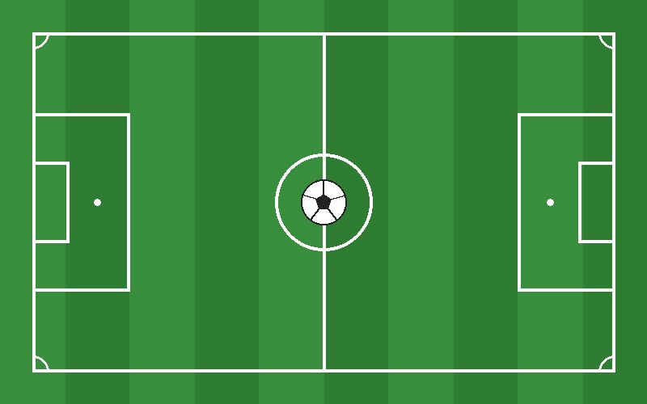

Football is the most popular sport in the world. It is played between two teams of 11 players each on a large grass pitch. The goal is to kick the ball into the other team's net to score points.
The Football Pitch
A football pitch has two goal areas, a center circle, and boundary lines:

Basic Rules
A match lasts 90 minutes, split into two 45-minute halves.
Only the goalkeeper can touch the ball with their hands, and only inside the penalty box.
Players pass, dribble, and shoot using their feet, head, or chest.
The team with the most goals at the end of the match wins.